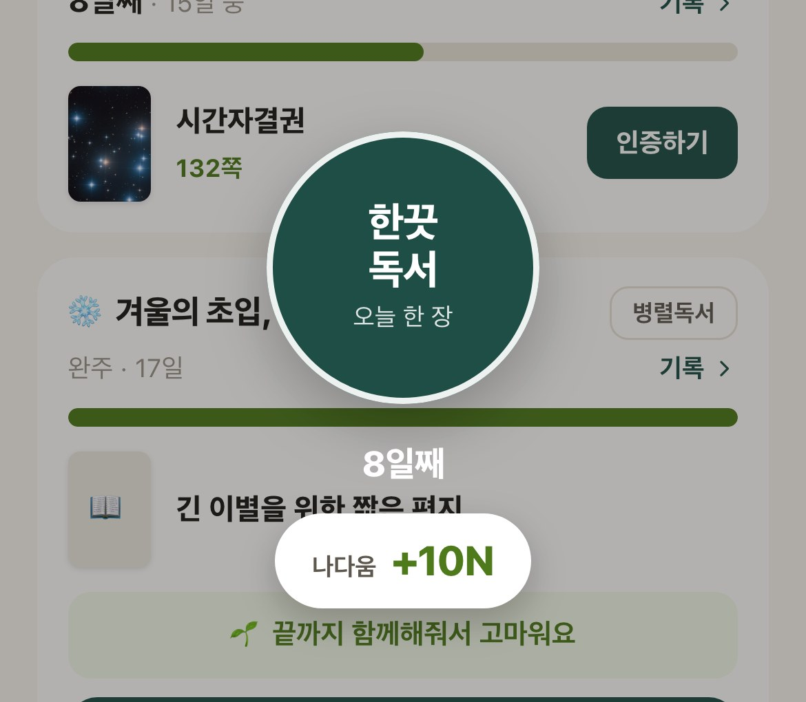
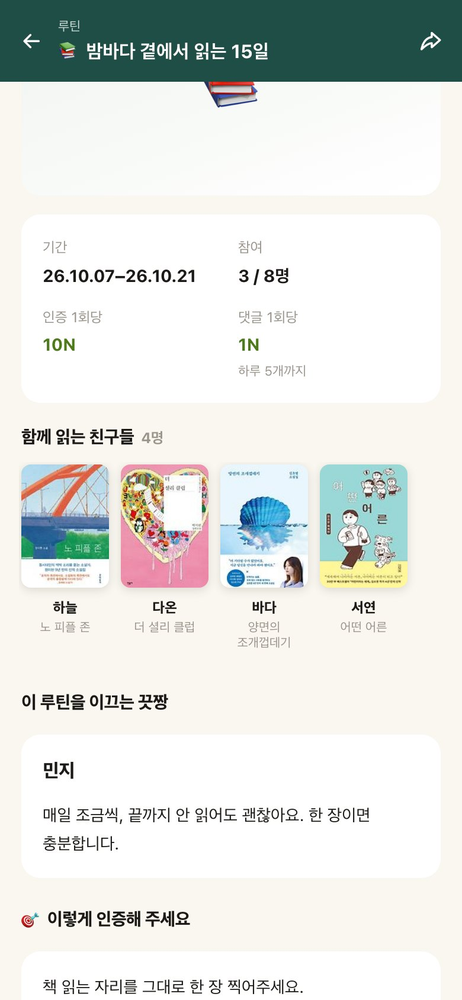
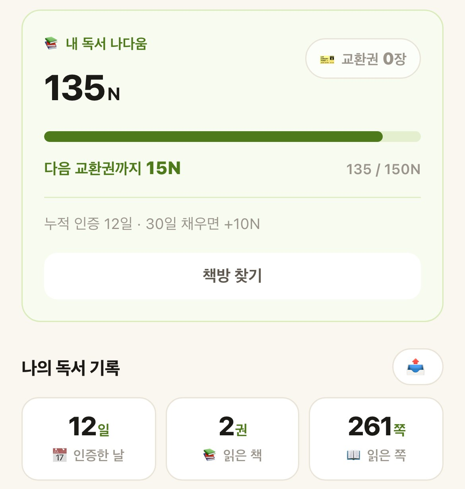
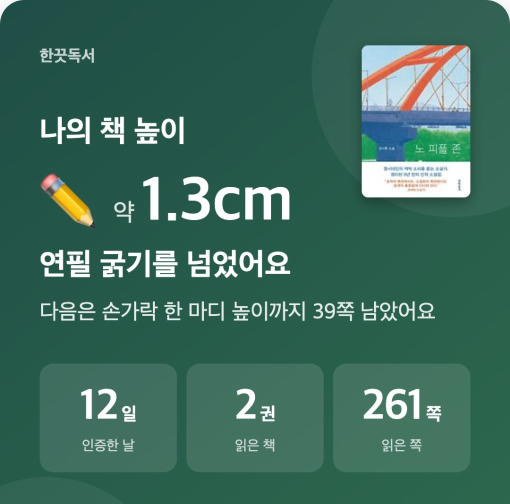

하루 10분, 책을 읽고 기록을 남깁니다.
매일 쌓인 '나다움' 포인트로 우리 동네 책방에서 원하는 책 한 권을 선물받으세요!
AI가 요약하고 대신 작성해 주는 시대,
스스로 글을 읽고 질문을 던지는 힘은 점차 옅어지고 있습니다.
2000년 조사가 시작된 이후 가장 낮은 점수입니다. 읽기 기초 수준(2수준)에 못 미치는 학생은 2022년 14.7%에서 2025년 17.8%로 늘었습니다.
도움 없이는 교과서를 이해하지 못하는 학생이 21% 이상이라고 답한 교원의 비율입니다. 학생 비율이 아니라 교사들이 체감한 응답입니다.
만 10~19세 청소년 가운데 스마트폰 과의존 위험군의 비율입니다. 전년(40.1%)보다 2.5%p 늘어 전 연령대에서 가장 높았습니다.
지난 1년 동안 읽은 책의 평균입니다(학습서 제외, 전자책·오디오북 포함). 2011년 22.2권에서 절반 수준으로 줄어, 조사 이래 가장 적습니다.
위 수치는 서로 다른 조사입니다. 하나의 원인으로 이어 말하지 않고, 지금 청소년의 읽기 환경을 보여주는 지표로 함께 봅니다.
하루 10분, 혼자서 책에 몰입해 자유롭게 인증하는 <매일한끗>으로 독서 습관을 만들고, 책을 좋아하는 어른 '끗짱'이 이끄는 모임 <함께한끗>에서 또래 친구들과 연결됩니다.
차곡차곡 쌓인 ‘나다움’ 포인트로 책 한 권을 교환합니다. 우리 동네 독립서점에 방문해 내가 읽고 싶은 책을 직접 고르고, 책방지기와 따뜻한 안부를 나누며 다정한 연결을 경험합니다.
읽고 나눈 시간 속에서 얻은 영감으로 나만의 글을 씁니다. 완성된 글은 독립출판과 전시로 이어져, 수동적 독자를 넘어 하나의 능동적인 창작자로 성장합니다.
하루 10분 독서 모임부터 독립서점에서 도서 교환까지, 한끗독서 앱에서 바로 경험해 보세요!
방해 없이 나만의 시간과 장소에서 책에 깊이 몰입해 보세요. 읽은 페이지 사진 한 장으로 오늘의 인증을 완성합니다.

'끗짱'이 이끄는 모임에서 또래 친구들이 현재 읽는 책과 매일의 기록을 둘러보고, 댓글과 좋아요로 응원을 주고받습니다.

매일 인증하고, 친구들과 댓글을 나누며 활동할 때마다 '나다움(N)' 포인트가 적립됩니다. 150N이 모이면 도서 교환권 1장이 생겨요.

교환권을 들고 우리 동네 독립서점을 찾아가 원하는 책을 직접 고르세요. 책방지기에게 QR코드만 보여주면 무료로 받아갈 수 있습니다.
내가 읽고 인증한 쪽수가 연필 두께나 손가락 마디처럼 실감 나는 높이(cm)로 변해 차곡차곡 쌓입니다. 나만의 독서 성장을 아카이브 카드로 간직하고 자유롭게 공유해 보세요.

한끗독서는 유스보이스가 1년간 운영해 온 <한끗루틴>의 독서 과정을 통해 그 변화가 이미 증명되었습니다.
평소라면 무의미하게 보냈을 15일인데, 문학 작품과 함께하니 마음의 양식이 쌓이는 기분이었어요. 루틴이 없었다면 느끼지 못했을 새로움이 너무 좋아서 앞으로도 더 열심히 참여하고 싶어요!
공부하려고 억지로 읽는 책에서 벗어난 느낌이에요. 내 말에 공감해 주고 서로 생각을 나눌 수 있는 사람들이 있다는 게 얼마나 큰 힘이 되는지 몰래 깨달았습니다. 혼자였다면 절대 몰랐을 것 같아요!
독서 모임처럼 소통하는 게 이렇게 즐거운 줄 몰랐어요. 끗짱님의 글을 보며 궁금증도 풀리고, 친구들과 이야기 나누며 제가 생각지 못한 부분을 배울 수 있어서 너무 좋았어요.
평소라면 절대 고르지 않았을 책들을 읽어보는 게 정말 유익했어요. 사람들과 이야기 나누다 보니 어느새 글을 읽는 습관까지 만들어졌네요.
도서 구매비는 청소년이 직접 교환한 도서비로 확인된 금액만 투명하게 지출되며,
나머지는 청소년이 매일 읽는 습관을 이어가도록 곁을 지키는 운영비로 소중히 사용됩니다.
도서 교환비 지원 및 독서 습관형성 운영비로 투명하게 사용됩니다.
→청소년이 책을 읽고 인증할 때마다 나다움이 적립됩니다.
→동네책방에서 직접 책을 고릅니다
→청소년이 직접 교환한 도서비로 확인된 금액만 투명하게 정산합니다.
결제와 기부금영수증은 도너스를 통해 처리됩니다
한끗독서 청소년들에게 책을 교환해 주는 전국 곳곳의 파트너 독립서점입니다.
파트너 독립서점은 상시 모집합니다.